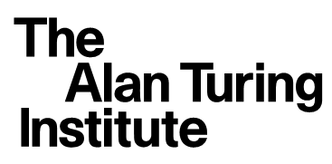
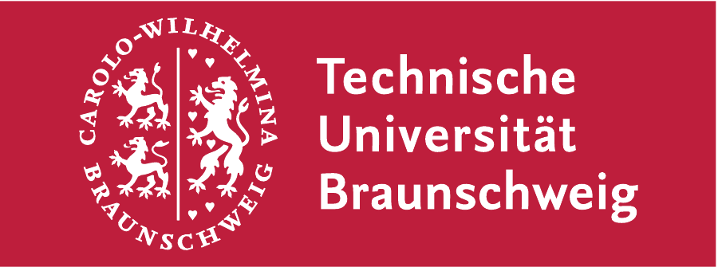

Jul–Oct 2026 · Berlin
Data Science Retreat
Data Scientist

During a 14-week programme, I built cropSpectAI, which uses light reflected from leaves to estimate chlorophyll.
I started out designing industrial valves and pumps. I went on to study computational mathematics and develop statistical methods for learning from simulations and data.
During a 14-week programme, I built cropSpectAI, which uses light reflected from leaves to estimate chlorophyll.

Developed Bayesian statistical methods for learning from data when simulations are expensive. Organised a materials-and-mechanics minisymposium at ENUMATH 2025.
Adviser: Prof. Sebastian Krumscheid

Developed methods and software for digital twins, and collaborated on data-driven modelling of chemical production.
Adviser: Prof. Adam Sobey

Worked on Monte Carlo methods for combining simulation and data. This appointment overlapped with my role at The Alan Turing Institute.

Developed models to describe uncertainty in material properties, and propagate it through multi-fidelity simulations. This work formed the foundation of my PhD.
PhD adviser: Prof. Hermann Matthies
Led projects to design and analyse industrial valves and pumps.